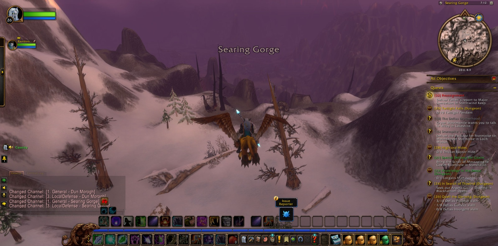
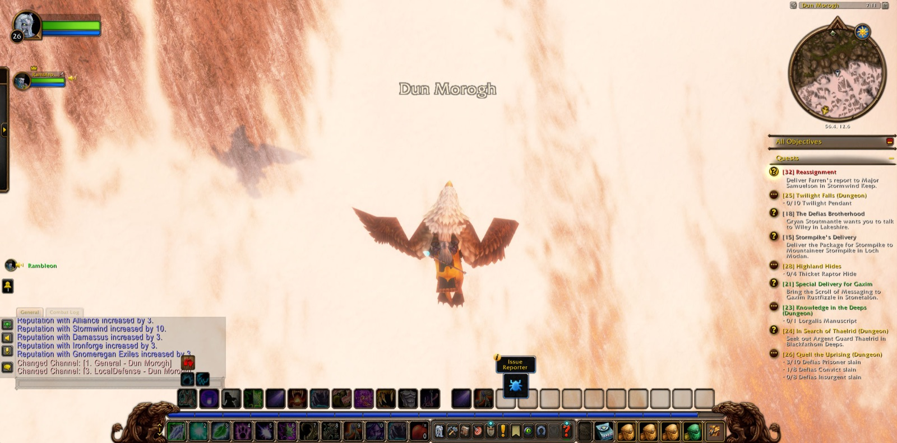
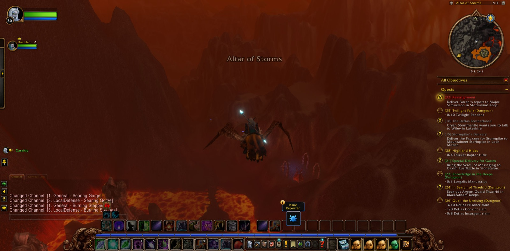
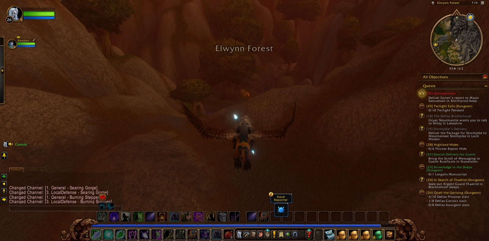

Cassidy Darkstar set out from the Cathedral of Light in Stormwind City, and there Rambleon the Hunter joined him. That companionship lasted almost the whole of the road that followed. They passed through Cathedral Square and the Deepwater Tavern of the Lion's Pride Inn, then came to Menethil Harbor and Baradin Bay. By way of The Great Sea they reached the Eastern and Western Strands of the Hillsbrad Foothills, and so came to Southshore. There Cassidy finished the errand of The Shamed Lieutenant. He took up others in its place: Down the Coast, Brewer's Trade, A Lack of Virtue, and Syndicate Assassins, the last given to him in Southshore Town Hall. A Lack of Virtue asked him to carry Tom's Gift back to Bart Tidewater in Menethil Harbor.


On the Western Strand he fought the Torn Fin, and for a short while Eric the Shaman fought beside him. Ten Tidehunters fell, and ten Oracles. Cassidy fell once on that shore, rose again, and the work was finished. Next he turned to the Daggerspine of the Eastern Strand and went on through Nethander Stead to Dun Garok. There he found a Sack of Homebrew Hops and delivered the Fallrook Varietal, and so the Brewer's Trade was done. Fruit the Warrior went with him briefly when he returned to the Western Strand to gather ten murloc heads for Farren's Proof. That proof passed through several hands, Marshall Redpath's among them, and became the errand called Stormwind Ho! Cassidy went back to the Eastern Strand and slew ten Shorehunters and ten Sirens. When that was finished he was given Farren's report to carry to Major Samuelson in Stormwind Keep. Before he left Southshore, a Shadowy Assassin fell to him.


Then came the long road. In Menethil Harbor he placed Tom's Gift in the hands it was meant for, and A Lack of Virtue was seen through. From there he went through Dun Morogh, past the Gates of Ironforge and Kharanos, across Searing Gorge and the Burning Steppes, and down through Elwynn Forest to Stormwind. In Stormwind Keep he delivered the report, and with it Cassidy came into his twenty-seventh level. A picture was taken to mark the moment. For a little while Tyrone the Warrior went with him, and they went down together into the Stormwind Stockade. Afterwards Cassidy took the same long road north again, by Blackrock Mountain, the Sea of Cinders and The Cauldron, by Misty Pine Refuge and Amberstill Ranch, back to the Wetlands.


In Bluegill Marsh and Sundown Marsh he fought crocolisks and the Mosshide: Fenrunners, Trappers, Brutes, an Alpha and a Mystic. He gathered nine pieces of Crude Flint for Fire Taboo. He passed by Saltspray Glen and Ironbeard's Tomb to Dun Modr, where he took up A Grim Task, The Thandol Span, and Bring Back a Bang. He crossed the Thandol Span into the Arathi Highlands as far as Refuge Pointe and Dabyrie's Farmstead, then turned back. In The Green Belt he handed over the flint and took up Blisters on the Land and Forced Disarmament. Lance the Hunter fought beside him briefly against the Dragonmaw. Ninja the Rogue and Steel the Paladin joined him on the way to Ironbeard's Tomb, and there a Nightveiled Rotheap was overcome. It was there too that Rambleon parted from him. Cassidy went on alone into Sundown Marsh, and he still had errands to carry across the bridge to the north.

